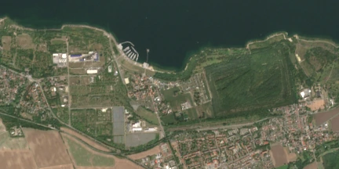

Stages A–C. In place on the homepage this figure sits directly under the headline below. Try the stage buttons, the example pixels, clicking anywhere on the image, the arrow keys with Enter, and Compare.
Understanding Earth through remote sensing.

Fig. 01Sentinel-2 Level-2A image of the south shore of the Geiseltalsee at Braunsbedra, Germany, 28 August 2024.Contains modified Copernicus Sentinel data 2024, processed by ESA · via Microsoft Planetary Computer